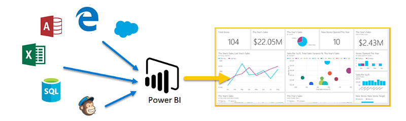
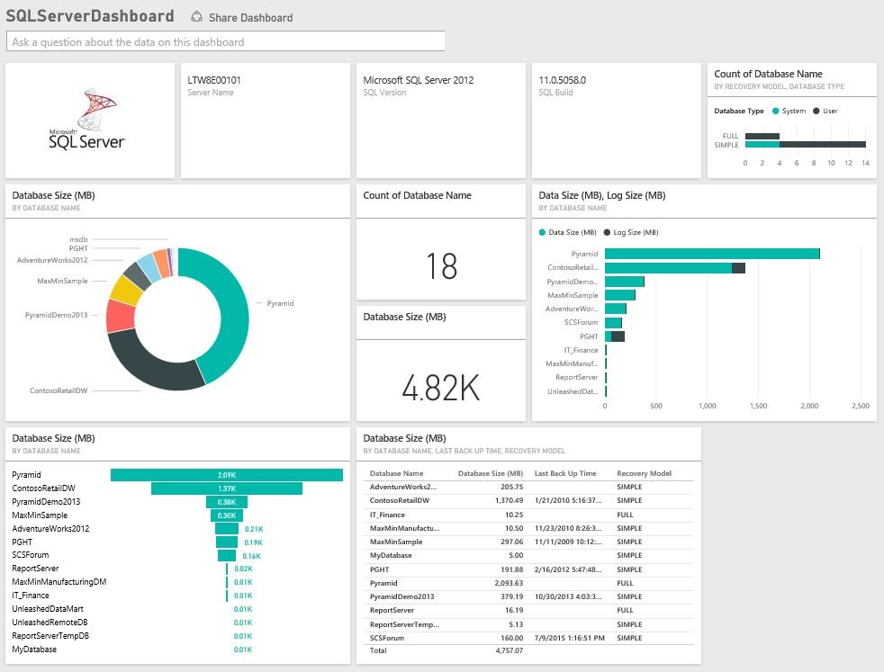
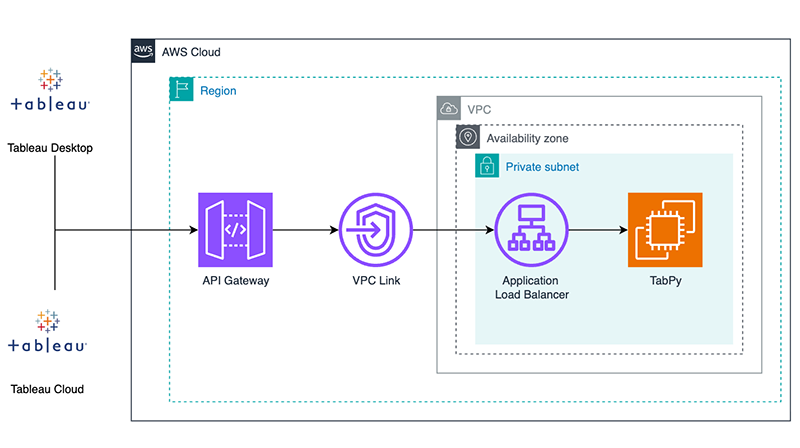

I'm Fengcai JI






Data Analytics
Skilled at processing and analyzing large amounts of data to uncover key insights.

Data Base
Familiar with database management and query optimization to ensure data integrity.

Data Visualisation
Able to transform data into clear visual charts for better understanding.

Machine Learning
Capable of building machine learning models for predictive analysis.

Big Data
Proficient in handling massive datasets and mastering big data processing techniques.

AI Research
Passionate about artificial intelligence research and continuously exploring new methods.


Certificate 1: Google analytics
点击上方图标查看对应项目（上三张 / 下三张）。